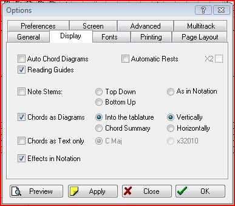
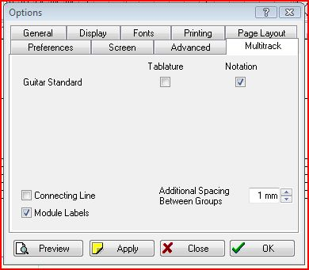

Lesson 15
Notes to Lesson 15
Lesson 15 introduces us to Bridges. One of the most common musical forms typically comprises 32 measures divided into 4 parts. Dividing 32 by 4 results in equal parts of 8 measures each. Also, the first part is usually repeated as the second part, and maybe very slightly different, such as the first time it ends on a V7 chord and the second time on the I chord. To built interest, a third part is added that is a contrast from the first two parts. The final part, is a repeat of the first ending on a I chord. To describe how music is divided, the parts are usually given letters. A-A-B-A describes the four parts where the first part is repeated, and A1-A2-B-A2 is often used to show that same form with the slight differences we discussed. The Section B is referred to as the "bridge" or "release." Sometimes it may be called the "chorus", but that term can also mean the rest of the tune after an introduction. By far, the most common name is Bridge as Mickey uses. This contrasting section may be in a new key or may be a repeat of a section of lyrics.
Mickey gives us three common "Standard" chord progressions found in hundreds of well known tunes. The first bridge is found in the Nat King Cole standard "Straighten Up and Fly Right", "Five Foot Two", Benny Goodman's "Seven Come Eleven", George Gershwin's "I Got Rhythm", and maybe 25% of all tunes from the 1930's. Jazz musicians borrowed the chord progression to "I Got Rhythm" as a standard to improvise on. By calling these improvisations "Rhythm Changes", they don't have to pay royalties to George's heirs. The next time you watch "The Flintstones", listen to the harmony of the theme song. It's a rhythm change. Rhythm Changes account for a large quantity of music from the last 60 or so years.
The second bridge is found in Duke Ellington's "Satin Doll" and "It Don't Mean A Thing if It Ain't Got that Swing" (just to name two of the Duke's best loved pieces), "On The Sunny Side Of The Street", and hundreds more.
The third bridge is a variation of the first and often used in "Rhythm Changes" as a slight variation. Additionally, the third chord can be a ii7 instead of a II7 (in our examples a D min instead of a D7.
Using our Vamps as the A section, and one of these bridges as the B section, we now have the ability to create dozens of harmonic structures for our original melodies. Thousands of tunes have been written from this formula just in the last century.
Throughout Mickey's course, he recommends having a notebook to store our ideas. Since we've been using our computers as our notebooks, I'd like to suggest that we make a folder and call it "Bridges". Using fakebooks, or collections of sheet music, go through it, searching for new bridge ideas. What I've found in doing this, is that often the basic progressions from Mickey's common bridges are used, but just masqueraded with a simple substitution, or perhaps a key change and the last measure of the bridge takes us back to the original key. I'd also guess that maybe 50% of the tunes we call standards don't have a bridge. When we discover new bridges or interesting chord progressions to save in our cyber-notebook, we can use TablEdit to create a chord chart. Here's how:
1. Create a "NEW" TEF by clicking on the "NEW" icon.
"NEW" Icon
2. In the New Tablature window, select "Standard Guitar" and edit the Default Comments as desired. When creating chord charts, one can use any instrument (we'll see later why). I always use Standard Guitar out of habit. You can use whatever you wish.

New Tablature Window
3. We will have only 1 MIDI module open in the upper right hand corner. Click on the 1 and in the MIDI module click on the box next to Rhythm Track, and then OK:

Select "Rhythm Track"
4. Select the Display Page from the File>Options... drop down menu. Uncheck the Automatic Rests box, then click on OK:

Display Page from the Options Menu
5. Using the Text Editor of TablEdit, we can write the chord progression. In the example below I've used Mickey's second bridge, and instead of a key, I've used the Roman numeral numbering system. I've selected "Above Notation", and using the "-" and "+" keys, I've moved the chord notation to just above the line. These are all techniques we've learned in previous lessons.

Chord Entry
6. We have the option of either leaving the TAB staff for future notes, or removing it. We can do that by selecting from the Files>Options... drop down menu Multitrack and then unchecking the box under Tablature, and clicking OK. If we remove it now and later on, we want to reinstate it, it's just a check in the box away!:

Multitrack Page from the Options Menu
That's all there is to it. We can now print it out, if desired. Don't forget to select Automatic Rests when finished with making Chord Charts as it's a handy tool for standard scores. I'm sure that it seems like a lot of steps, but after doing it once, it'll be second nature. We've all used Chord Charts since our earliest experiences with the guitar. I'm sure you'll agree that Chord Charts are very handy. Using TablEdit, instead of getting criticism of our penmanship, we get pats on the back for the great looking, easy to read score.
Here's how a Printout might appear:

Sample Printout Of Our Chord Chart
For those of you wanting a little bit more: Transpose the three bridges into the guitar friendly A, D, and E keys. If you'd like to share them, please send them to me.
And for true gluttons for more projects: Take one of Mickey's bridge examples and use it with the vamps you created in Lessons 13 and 14. Create a 32 bar harmony with the A1-A2-B-A2 form we discussed. The vamp I created in Lesson 14 in G is found in this lesson's TEF's with Mickey's first bridge. And of course, if you'd like to share your work, send it to me as well.
Just keep it FUN!